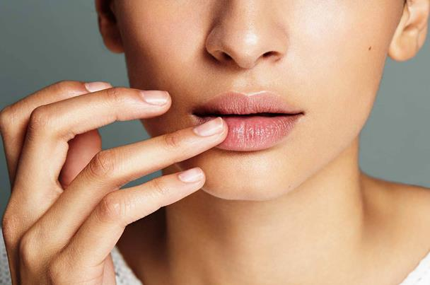

<!-- We don't need full layout here, because this page will be parsed with Ajax-->
<!-- Top Navbar-->

<div class="pages">
  <!-- Page, data-page contains page name-->
  <div data-page="about" class="page">
    <!-- Scrollable page content-->
    <div class="page-content">
      <div class="navbar">
  <div class="navbar-inner">
    <div class="left"><a href="#" class="back link"> <i class="icon icon-back"></i><span>العوده </span></a></div>
    <div class="center sliding">   </div>
    <div class="right">
       
      <!-- Right link contains only icon - additional "icon-only" class--><a href="#" class="link icon-only open-panel"> <i class="icon icon-bars"></i></a>
    </div>
  </div>
</div>
      <div class="content-block presentcon">
<div class="row">
  <div class="col-100">

  </div>
</div>

<div class="row t">
  <div class="col-100">
  
حتاج الشفاه إلى عناية مثلها مثل بقية أجزاء الجسم لكن الكثيرات تجهل ذلك، اليك مجموعة من الوصفات الطبيعية التي تساعد في علاج مشكلة تشقق الشفايف وتضفي جمالاً خاصاً عليها

<h4>  وصفة زبده الكاكاو لعلاج تشقق الشفاه:</h4>
المكونات: 6 ملاعق صغيرة زبده كاكاو + ½ملعقة صغيرة شمع عسل مبشور

الطريقة: يسخن شمع العسل مع زبده الكاكاو على نار هادئة مع  التقليب الجيد حتى يذوب الخليط، وعندما يتماسك الخليط يتم استخدامه كدهان للشفاه بواسطة فرشاة ناعمة. هذه الوصفة لها نتائج مذهلة في علاج تشقق الشفاه وإضفاء اللمعان والمظهر الصحي الجميل اليها.
 
 <h4>كريم العسل لتشقق الشفايف:</h4>
 المكونات: 2 ملعقة زيت لوز + ملعقة عسل + ملعقة شمع عسل

الطريقة : يذاب العسل مع شمع العسل، ثم يضاف إليها زيت اللوز، ويوضع الخليط في برطمان محكم الغلق، وتستخدم هذه الوصفة يومياً للحصول على شفاه ناعمة نضرة وردية اللون.
  
  <h4>وصفة شمع العسل وزيت اللوز لشفايف ناعمة: </h4>
  المكونات: 3 ملاعق صغيرة شمع عسل مبشور + 3 ملاعق صغيرة زيت لوز

الطريقة: يسخن شمع العسل على نار هادئة حتى يذوب ثم يضاف إليه زيت اللوز حتى يصبح الخليط متماسك، يعتبر هذا الخليط من الوصفات الرائعة لعلاج تشقق الشفايف.
  </div>
</div>
   </div>
    </div>
  </div>
</div>